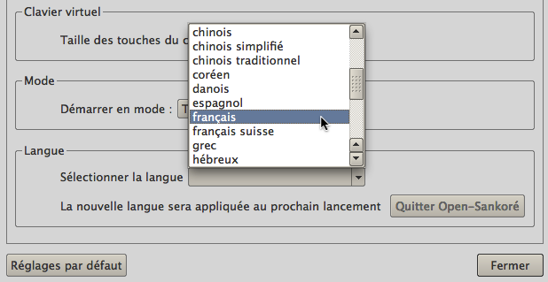

Le changement de la langue du logiciel s'effectue dans le premier onglet des "Préférences" du menu Open-Sankoré, onglet “Afficher”.
Le choix de la langue est effectif une fois que le logiciel est redémarré.
Ce réglage prime sur le réglage de la langue par défaut du système d'exploitation de votre ordinateur.
